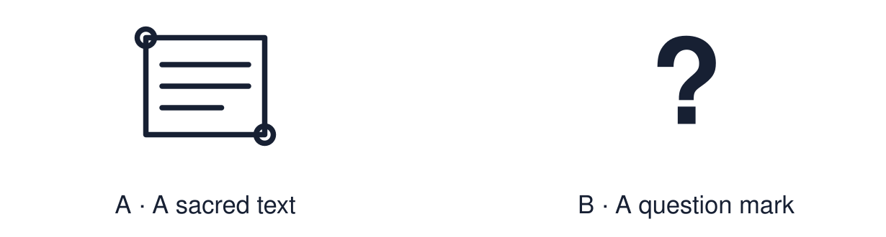

Arrival choices
Previous lesson reminder:

Start with 1 and 2. Try 3 and 4 when ready. Reading and exact scribing are available.
1 Name one belief from each worldview.
Support: Use the reminder strip or talk it through with an adult.
2 Which meaning fits authority?
Support: Choose: A source people trust to guide what they believe or do OR Writing that is holy to a religion, such as the Bible or the Qur’an.
3 Define “authority” in RE.
Support: Use the model evidence anchor C or read one relevant card together.
4 Is authority in RE the same as being in charge?
Support: Give a reason when ready.
Stretch: use a precise example or explain which detail supports your answer.
Evidence cards
Read, point or listen. Keep the source label with any detail you use.
A Religious sources
Many believers turn to sacred texts, religious leaders such as a priest, imam or rabbi, and the traditions of their community.
Source: Authored RE summary
Limit: Belief and practice vary between individuals and communities.
B Non-religious sources
Many non-religious people turn to reason, evidence, conscience and the experience of people they trust.
Source: Authored RE summary
Limit: Religious people use reason and conscience too.
C Authority is not “being in charge”
A boss can give orders. An authority in RE is a source a person chooses to trust for guidance.
Source: Authored classroom resource
Limit: People can question an authority and still respect it.
D Scenarios
Amira must decide whether to report a friend who is stealing at work. Joe must decide whether to take a job that means working every Sunday.
Source: Authored classroom case
Limit: This example does not describe every person, family or community.
Shared investigation
1. Match each fictional decision to a source the person might turn to.
2. Explain why that source could guide them.
Work with a partner or adult, or use your own table. One person suggests; the other checks the evidence. Swap after one turn. Passing is allowed.
Move or match the cards
| Cards to use |
|---|
| Priya weighs the likely consequences for everyone |
| Joe talks it through with his priest |
| Amira reads what the Qur’an says about honesty |
Possible labels: Reason / Religious leader / Sacred text
Support: Use the glossary and one chunk of evidence. Plan the claim and supporting detail before explaining.
Further challenge: Explain what a person might do when two sources of authority disagree.
Supported independent task
Complete this route only. Recognise a source of authority or meaning and explain how it may guide a believer or non- religious person.
1. Choose one scenario and listen to it read aloud.
2. Choose the source from two or three options.
3. Say or finish: ___ may guide them because ___.
Support: Use the glossary and one chunk of evidence. Plan the claim and supporting detail before explaining. Complete the organiser one space at a time. ___ may guide them because ___.
An adult may read or scribe your exact response. They should not choose the answer.
Standard independent task
Complete this route only. Recognise a source of authority or meaning and explain how it may guide a believer or non- religious person.
1. Choose one scenario.
2. Explain which source might guide the person.
3. Explain why, using the word “authority”.
Support: ___ may guide them because ___.
Check the required evidence and revise one detail.
Stretch independent task
Complete this route only. Recognise a source of authority or meaning and explain how it may guide a believer or non- religious person.
1. Choose one scenario and two possible sources.
2. Explain how each might guide the person.
3. Explain what they could do if the sources disagree.
Support: Choose the evidence independently. Use the frame only if it helps.
Explain what a person might do when two sources of authority disagree.
Exit ticket
Choose a response mode. You may give your answers privately to an adult.
Define “authority” in RE.
Is authority in RE the same as being in charge?
Support: ___ may guide them because ___.
Further challenge: Explain what a person might do when two sources of authority disagree.